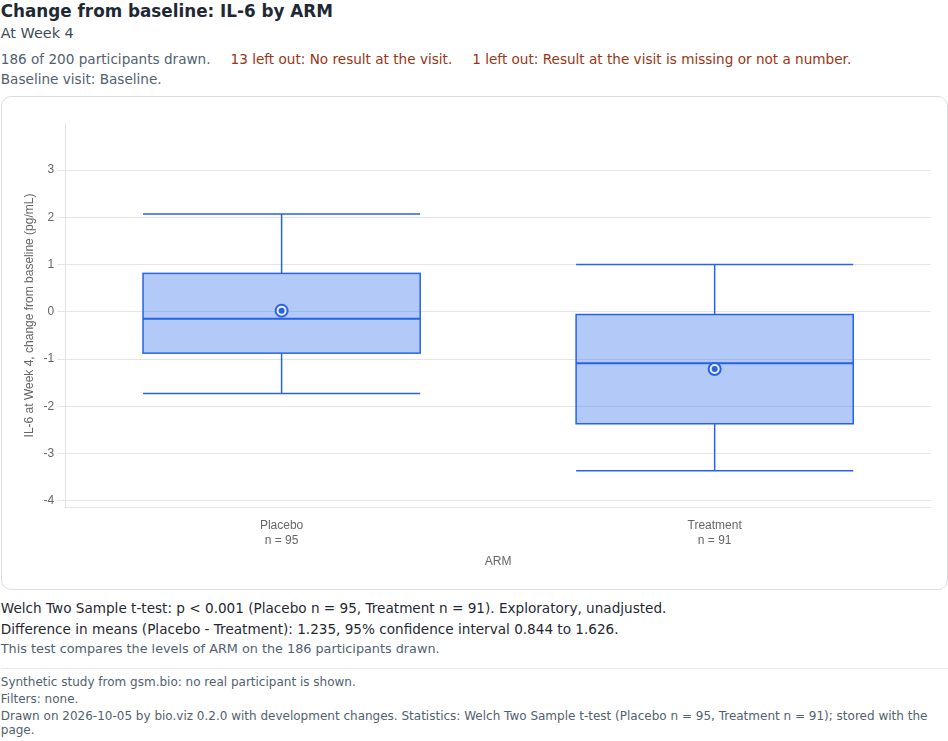
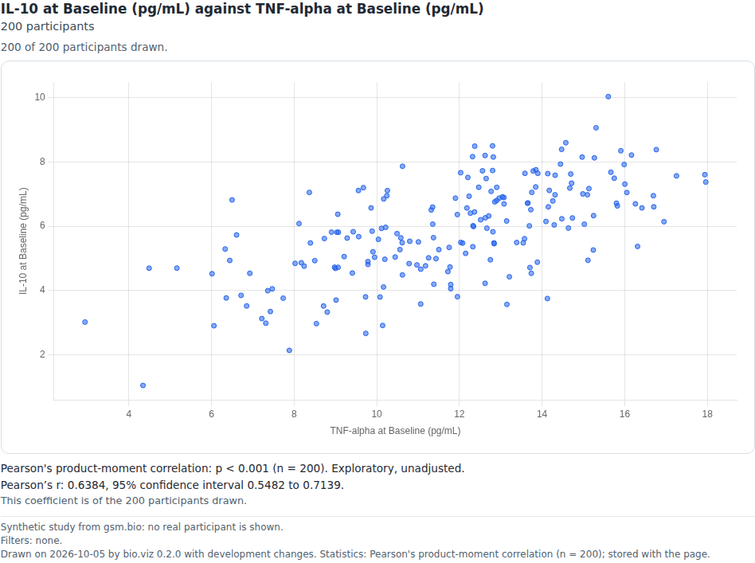
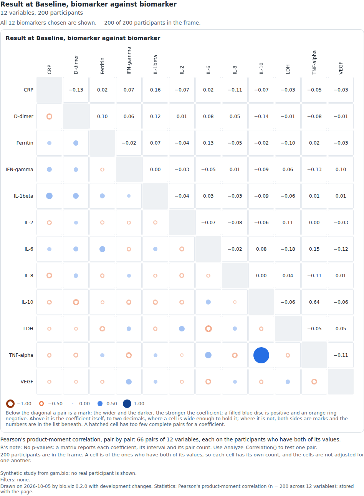
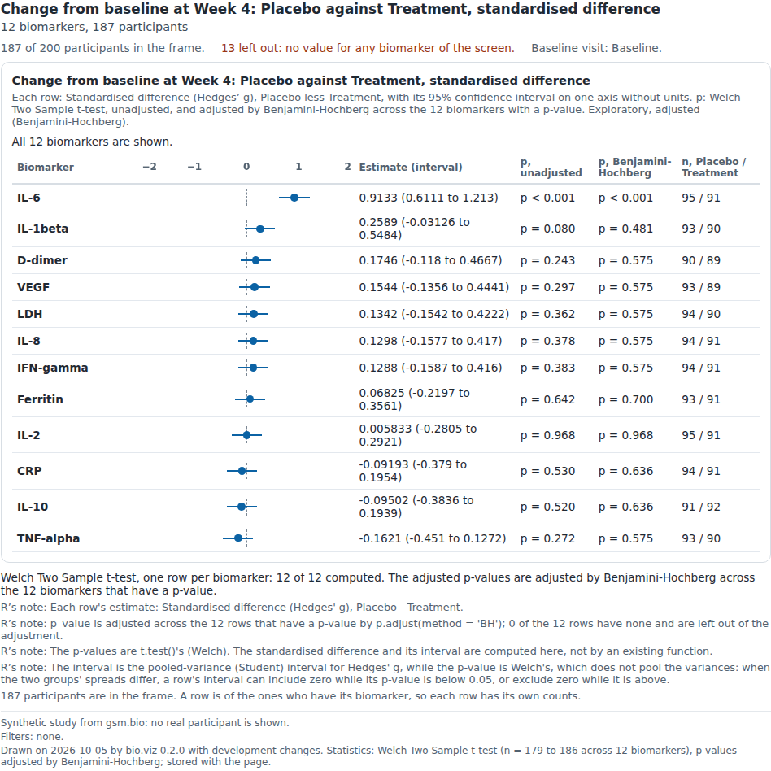
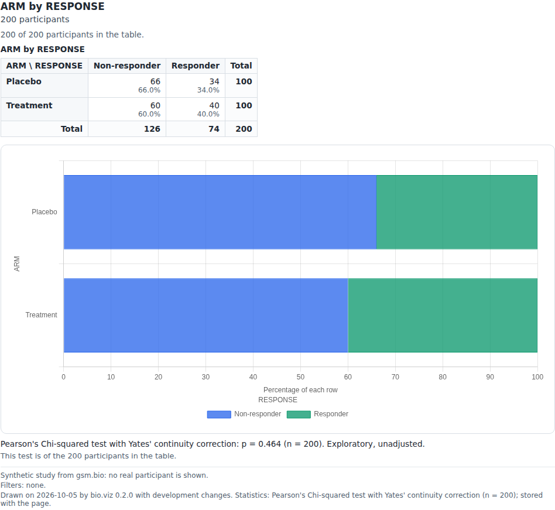
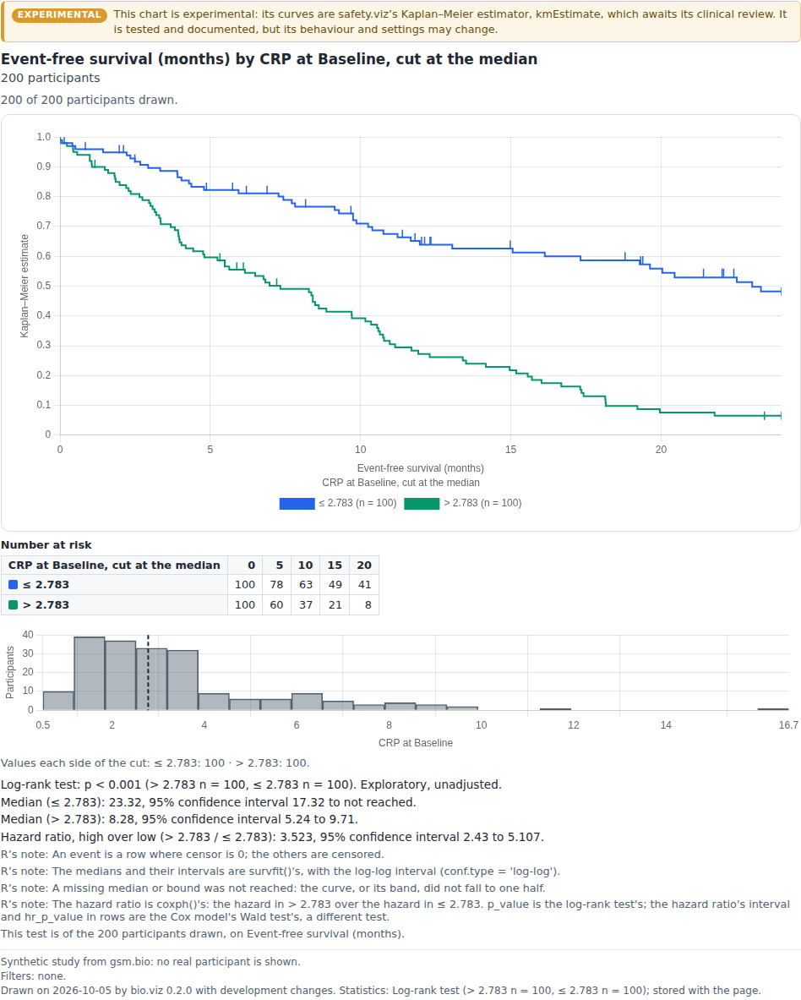

Gallery
Each chart in bio.viz, with the tests that prove it does what its requirements say and the reference for calling it.
Charts 6 published

Group comparison
Does this biomarker differ between these groups? One value across the levels of a category at chosen visits, as boxes, violins or points with the number in each group beneath, a second grouping by colour, panels by one further variable and a logarithmic scale. It opens on a tile for every biomarker, a line per group through the group's median at each scheduled visit, and a click on a tile opens that biomarker across the visits in one picture, with the number in each group and R's test of the groups under each visit; a click on a visit opens it alone. Unscheduled visits are left out until they are switched on. Click a box or a point to list its participants and open a participant's profile.

Association scatter
Do these two variables move together? One point per participant, with either axis a biomarker at a visit or a participant-level number, coloured by a group, in panels by one further variable, each axis linear or logarithmic. Under it R's Pearson or Spearman coefficient with its interval and p-value, for everyone drawn and within each colour; over it the line y = x, or R's linear fit or smooth with its band. Drag across the points to list the participants in a region, and click a point to open that participant's profile.

Correlation matrix
Which of these biomarkers, or which visits of one biomarker, are related? A grid over a set of variables: below the diagonal a mark sized and coloured by R's coefficient, above it the number, with the pair count of every cell, for Pearson or Spearman on the participants who have both values. It prints no p-value. It opens on every biomarker at the first visit, and a click on a cell opens that pair in the association scatter, with a way back.

Biomarker screen
Across every biomarker, where is the signal? One row per biomarker for a comparison chosen once, a standardised difference between two groups or a correlation with one variable, with R's estimate and its interval on one axis without units, and R's p-values beside it, unadjusted and adjusted across the rows by Benjamini-Hochberg or Holm. The rows are sorted by the estimate, and a click on a row opens that biomarker in the group comparison or the association scatter, with a way back.

Cross-tabulation
Is this category associated with that one? A two-way table of counts with its row and column totals and percentages, beside stacked bars of the same numbers, and R's chi-square or Fisher's exact test of it, with R's warning when an expected count is too small for chi-square. Either variable is a column or a biomarker cut at its median, tertiles, quartiles or typed points. Click a count to list its participants and open a participant's profile.

Stratified survival Experimental
The curves are safety.viz's Kaplan–Meier estimator, kmEstimate, which awaits its clinical review.
Do participants with high and low levels of this biomarker have different outcomes? Kaplan–Meier curves per group, with censor marks and an at-risk strip, above a histogram of the biomarker showing where the cut falls and how many land each side. The groups are a column's or a biomarker cut at its median, tertiles, quartiles or typed points, and the cut line can be dragged: the curves follow at once, and R is asked again when it is let go. Under it R's log-rank test, each group's median survival with its interval and, for two groups, the hazard ratio with its interval. Click a curve or a count at risk to list its participants and open a participant's profile.
Demo data
Every demo and most tests run on one made-up study, generated in gsm.bio from a seeded model with known effects planted in it, so a test can assert an answer that is known in advance. No real participant is in it.
Results
One row per participant, biomarker and visit: 11,472 rows.
Columns
USUBJID,VISIT,VISITNUM,TEST,STRESU,STRESNParticipants
One row per participant: 200 rows.
Columns
USUBJID,ARM,SEX,AGE,BMIBL,RESPONSEOutcomes
One row per participant and endpoint: 200 rows.
Columns
USUBJID,PARAMCD,PARAM,AVAL,CNSR
- Copied byte for byte from gsm.bio at commit
20e4a03, licence Apache License (>= 2). Nothing is retyped or regenerated here. - The source record holds each file's checksum, and the unit tests fail when a file no longer matches it.